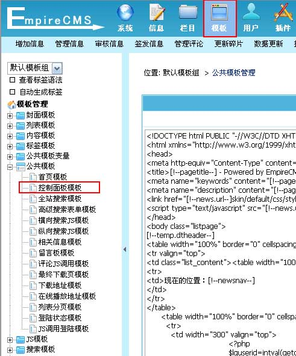
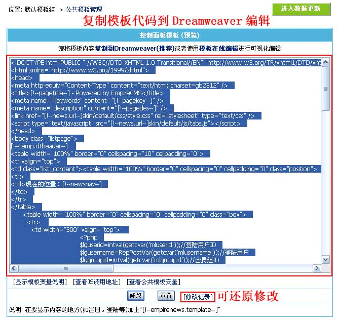
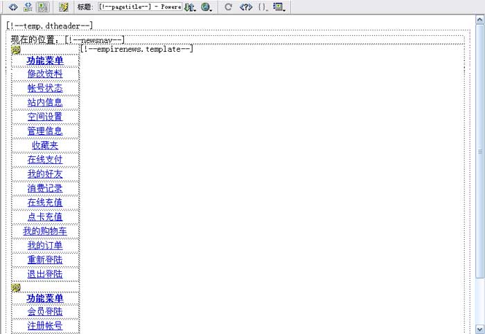

| 控制面板模板为控制会员中心相关页面的头部和尾部显示(/e/member)，如“会员操作页面”、“信息反馈”、“报错提交”等界面。 |
|
| 控制面板模板制作格式 |
| 页面头部 [!--empirenews.template--] 页面尾部 |
| 控制面板模板支持变量说明 |
| [!--newsnav--]：所在位置导航条 | [!--news.url--]：网站地址(参数设置的站点地址) | [!--class.menu--]：一级栏目导航 |
| [!--pagetitle--]：页面标题 | [!--pagekey--]：页面关键字 | [!--pagedes--]：页面描述 |
| 支持公共模板变量 | 支持PHP代码 |
| 修改控制面板模板 |
| 1、登录后台，单击“模板”菜单，选择“控制面板模板”子菜单，进入修改控制面板模板界面： |
|  |
| 2、进入“修改控制面板模板”界面，将模板代码复制到Dreamweaver编辑，如下图： |
|  |
| 3、把控制面板模板复制到Dreamweaver后可进行可视化编辑，如下图： |
| 图1：设计视图  |
| 4、修改控制面板模板后，复制页面的代码到后台的“控制面板模板”文本框，然后点击“修改”即可修改完毕。 |
| 5、前台预览效果可访问：/e/member/login/ |